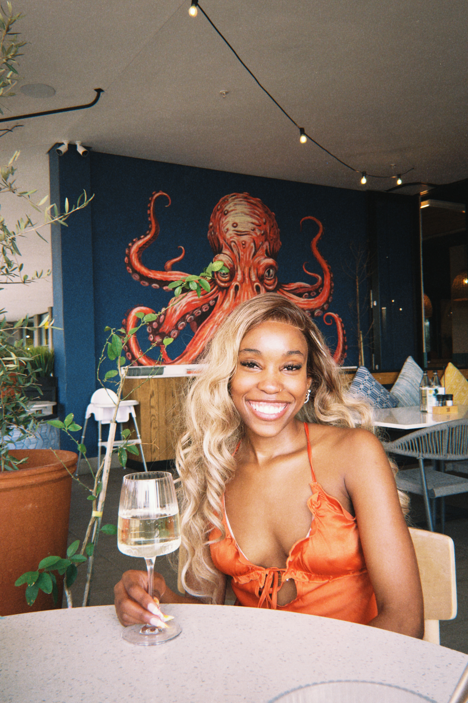

WHO IS SHE?
More than a student.
A work in progress.
I am learning to combine technology, creativity and people skills into a career I can be proud of.

MY STORY
Learning by doing.
I am a Computer Science student at the University of Namibia. I am a proactive learner who is willing to expose myself to new environments and opportunities.
My current focus is strengthening my web-development foundations, building confidence with programming and gaining practical experience. I also value communication, teamwork, adaptability and reliability.
When I'm not studying, I enjoy going to the gym and dancing. These activities remind me to stay balanced, disciplined and open to growth.
MY JOURNEY
Where I'm heading
Learn
Strengthen my programming and web-development foundations through coursework and independent learning.
Build
Create practical projects that demonstrate what I can do instead of only describing my skills.
Experience
Gain real-world exposure, improve my professional communication and learn from teams and clients.
Grow
Keep developing into a confident technology professional who can solve problems and contribute meaningfully.